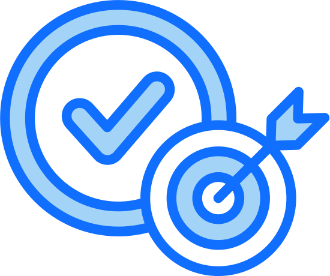

|
 |
Objetivos |
Voler. | |||||
| El Plan de Prevención cuenta con diversos Objetivos: | |||||||
|
Para alcanzar estos objetivos, es fundamental que la prevención forme parte del día a día de la empresa y no se limite a cumplir con una obligación legal. La seguridad es una responsabilidad compartida: la dirección debe proporcionar los medios y la formación necesarios, el personal debe aplicar las normas establecidas, utilizar correctamente los equipos y comunicar cualquier situación de riesgo de forma inmediata
Asimismo, este plan reconoce que la protección de los equipos informáticos y de la información es tan importante como la protección de las personas.Un fallo de seguridad, una pérdida de datos o una avería pueden iterrumpir la actividad y provocar daños económicos y de imagen, por lo que se establecen medidas preventivas tanto físicas como digitales.
Con el fin de garantizar su eficacia, el plan se revisará de forma periódica y siempre que se produzcan cambios relevantes, como nuevas instalaciones, incorporación de equipos, modificaciones en los puestos de trabajo o actualizaciones en las normas. De este modo, las medidas de prevención se mantendrán actualizadas y adaptadas a las necesidades reales de la empresa.
Siguiente. |